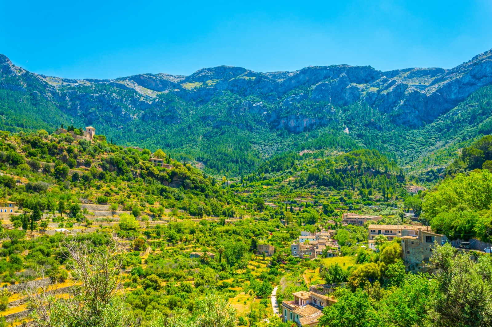
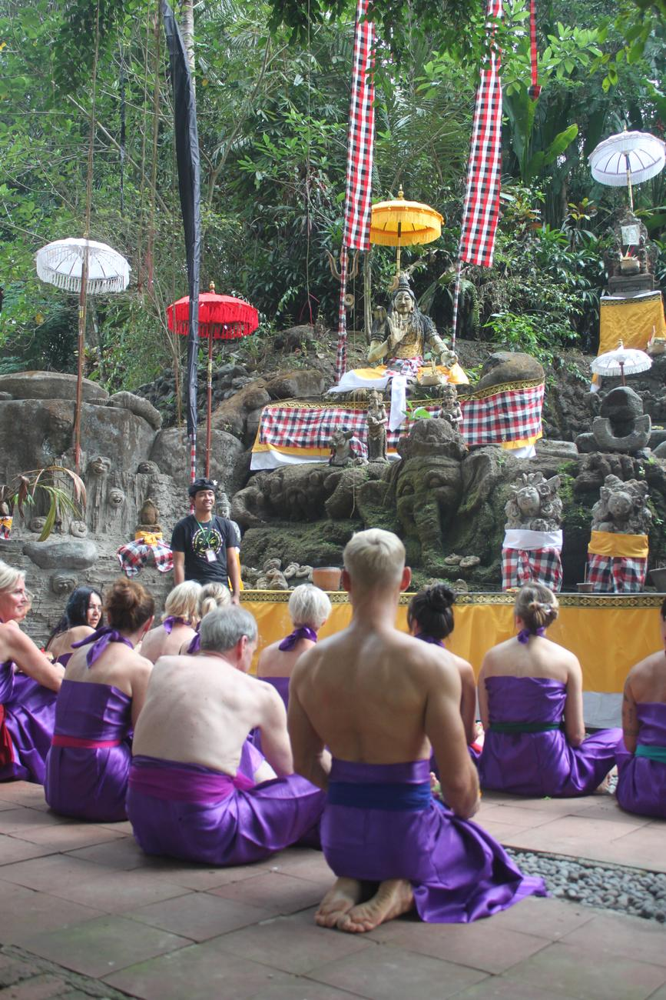
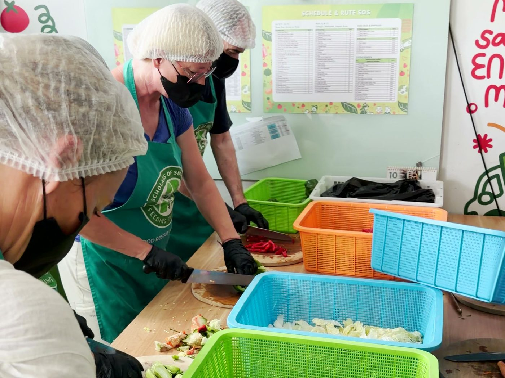
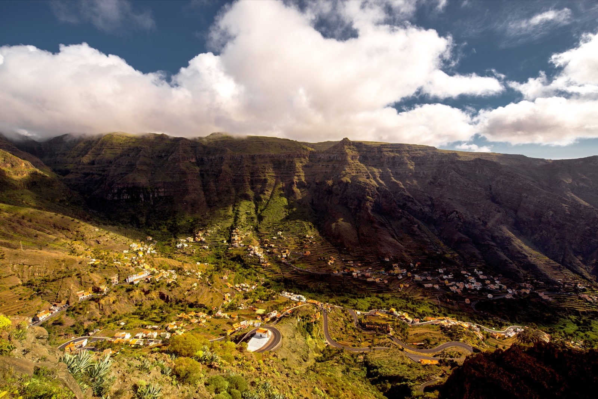

39,75° N · 2,70° ONeuBewegung · Mallorca
In Bewegung
Yoga und Fitness auf Mallorca
- Nächster Termin
- 9. bis 16. Oktober 2027
- Dauer
- 7 Nächte, Samstag bis Samstag
- Gruppe
- höchstens 16 Gäste
Programm 1.790 €Zur Reise
Reisen · Alle vier Themen
Bewegung, Ernährung, Medizin und Mindset in einer Woche
Für alle, die einmal alles kennenlernen wollen: Bewegung, Ernährung, Medizin und Mindset in einer Woche.

Auf einen Blick
Termine



Der Wochenplan
Jeder Morgen beginnt mit Meditation und Yoga. Mittags ist Pause. Abends essen wir zusammen.
Zuerst Anreise
Danach Begrüßungskreis und Einführungsabend
Zuerst Fitness-Check, danach Training
Danach Erste Coaching-Gespräche unter vier Augen
Zuerst Auf Bali die Wasserzeremonie Melukat, in Thailand der Segen der Mönche im Resort
Danach Vortrag Ernährung
Zuerst Auf Bali kochst du mit SOS Bali für Menschen in Not, in Thailand besuchen wir die Soi Dog Foundation
Danach Mittagessen in der Stadt
Zuerst Kochkurs und Workshop
Danach Freier Nachmittag
Zuerst Training, wer mag, steigt ins Eisbad
Danach Vortrag Medizin
Zuerst Fitness-Check 2, dein Plan für zu Hause
Danach Abschlusskreis und Abschiedsessen
Zuerst Abschluss-Meditation
Danach Abreise
Im Programmpreis
Nicht im Programmpreis
Das Zimmer buchst du direkt beim Resort. Auf Bali wohnst du im Grün Canggu, in Thailand in einem Wellness-Resort in Rawai. Alle Einzelheiten und Sonderpreise für eine Verlängerungswoche stehen auf longevityretreatbali.de.
Auch interessant

39,75° N · 2,70° ONeuBewegung · Mallorca
Yoga und Fitness auf Mallorca
 43,20° N · 11,60° ONeu
43,20° N · 11,60° ONeu
Kochen · Toskana
Kochreise in die Toskana

28,10° N · 17,33° WNeu